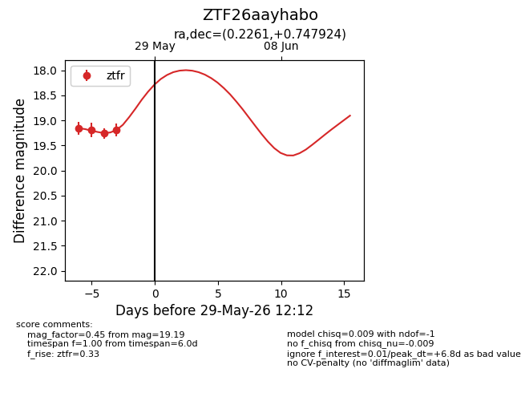
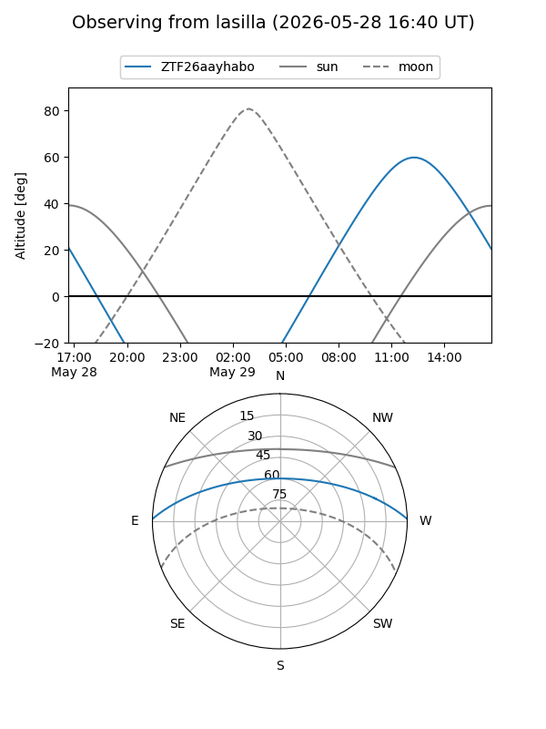
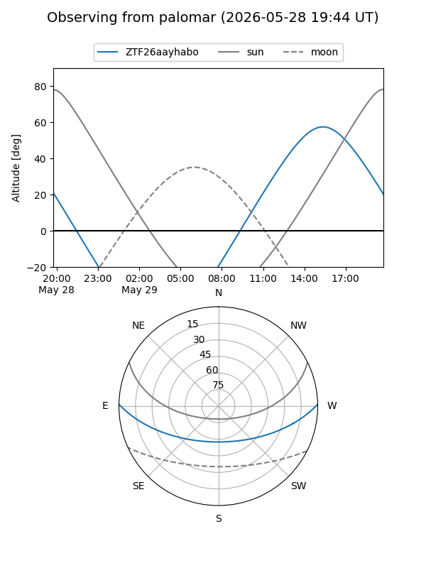
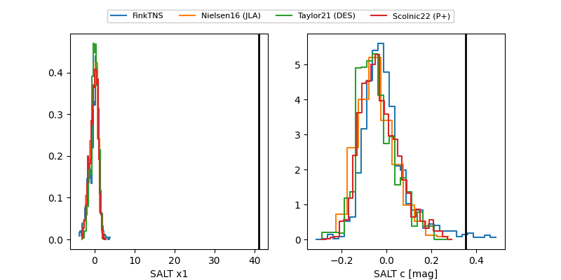

ZTF26aayhabo
Target ZTF26aayhabo at 2026-05-29 12:16
Aliases and brokers:
lsst-FINK: link
lsst-Lasair: link
lsst-ALeRCE: link
ztf-FINK: link
ztf-Lasair: link
ztf-ALeRCE: link
alt names
ZTF26aayhabo (ztf,fink_ztf)
Coordinates:
equatorial (ra, dec) = 0.2261,+0.74792
equatorial (HMS+DMS) = 00:00:54.26,+00:44:52.53
galactic (l, b) = (97.3356,-59.58882)
Flags:
Photometry:
last ztfr=19.19
4 ztfr detections
Lightcurve

Visibility


Additional plots
